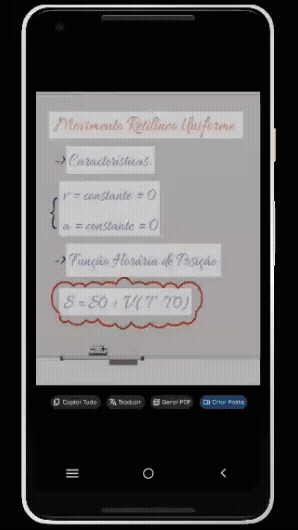
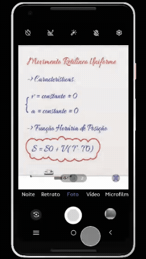
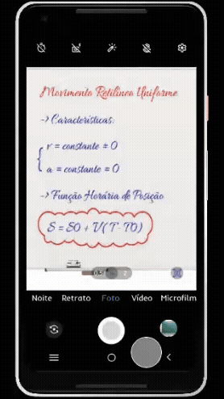

JOVI MOBILE
"Sucesso no Mundo. Agora no Brasil"
Público-alvo
Estudantes Full Time
Solução
Criação automática de pastas por similaridade de conteúdo
A criação de pastas automáticas com base em similaridade semântica configura-se como um recurso altamente relevante para o cotidiano do estudante, uma vez que possibilita a detecção do conteúdo e a organização da galeria conforme seus interesses. Dessa forma, elimina-se a necessidade de interrupções frequentes para classificação manual dos arquivos, otimizando tempo e produtividade.
Geração automática de PDF a partir de imagem (OCR)
acrescentar texto
Galeria
-
Criação de pastas automáticas
Crie pastas automáticas de acordo com o contexto da sua imagem!

Após a captura da imagem, o sistema identifica o contexto e oferece a opção "Criar Pasta" que permite com que o conteúdo seja agrupado conforme o assunto, na galeria. -
Gerar arquivo PDF através da câmera
Gere arquivos PDF através da câmera e economize tempo!

Na interface da câmera, o sistema identifica em tempo real que há textos através da captura de imagem da câmera, e sugere um escaneamento, após o acionamento da funcionalidade o texto é escaneado, após a ação de "Gerar PDF" o texto é extraido da imagem e acrescentado num novo arquivo PDF. -
Gere PDFs através da galeria
Você também pode gerar arquivos PDF através da galeria!

A funcionalidade de "Gerar PDF" também pode ser acionada através da galeria. O fluxo ocorre de maneira semelhante ao que foi apresentado na imagem anterior, você entra na galeria, seleciona a imagem e gera o PDF a partir da imagem.
Nossa Equipe
-
Giovana + cargo -
Giovane + cargo -
Mie + cargo -
Pedro + cargo -
Thiago + cargo